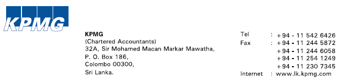
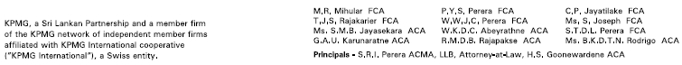

We have audited the accompanying financial statements of Sri Lanka Telecom PLC, (“the Company”), and the consolidated financial statements of the Company and its subsidiaries (“Group”), which comprise the statement of financial position as at December 31, 2014, and the statement of profit or loss and other comprehensive income, statement of changes in equity and statement of cash flows for the year then ended, and notes, comprising a summary of significant accounting policies and other explanatory information set out on the financial reprts section of the annual report.
The Board of Directors (“Board”) is responsible for the preparation of these financial statements that give a true and fair view in accordance with Sri Lanka Accounting Standards, and for such internal control as Board determines is necessary to enable the preparation of financial statements that are free from material misstatement, whether due to fraud or error.
Our responsibility is to express an opinion on these financial statements based on our audit. We conducted our audit in accordance with Sri Lanka Auditing Standards. Those standards require that we comply with ethical requirements and plan and perform the audit to obtain reasonable assurance about whether the financial statements are free from material misstatement.
An audit involves performing procedures to obtain audit evidence about the amounts and disclosures in the financial statements. The procedures selected depend on the auditors’ judgment, including the assessment of the risks of material misstatement of the financial statements, whether due to fraud or error. In making those risk assessments, the auditor considers internal control relevant to the entity’s preparation of the financial statements that give a true and fair view in order to design audit procedures that are appropriate in the circumstances, but not for the purpose of expressing an opinion on the effectiveness of the entity’s internal control. An audit also includes evaluating the appropriateness of accounting policies used and the reasonableness of accounting estimates made by Board, as well as evaluating the overall presentation of the financial statements.
We believe that the audit evidence we have obtained is sufficient and appropriate to provide a basis for our audit opinion.
In our opinion, the consolidated financial statements give a true and fair view of the financial position of the Group as at December 31, 2014, and of its financial performance and cash flows for the year then ended in accordance with Sri Lanka Accounting Standards.
As required by section 163 (2) of the Companies Act No. 07 of 2007, we state the following:
a) The basis of opinion and scope and limitations of the audit are as stated above
b) In our opinion:
CHARTERED ACCOUNTANTS
Colombo
27 February 2015
